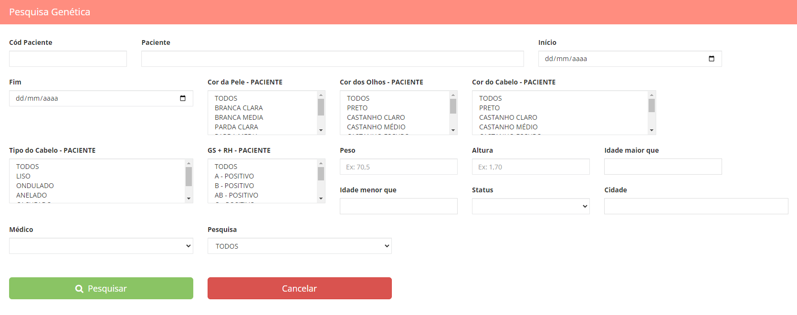

Menu Questionário Genético
Pesquisa genética: Onde o médico poderá realizar pesquisas de similaridade entre doadoras e receptoras de acordo com a(s) características que ele quiser. Basta digitar, selecionar o desejado e clicar em pesquisar que as pacientes compatíveis com sua pesquisa irão aparecer nos campos abaixo.
Questionário Genético Receptora de Embriões: b>Onde aparecerá a lista de receptoras de embriões seguindo a regra para todas as pacientes que foram em sua anamnese colocadas como receptoras de embriões. Clicando no ícone de edição a frente do nome da paciente você será direcionado a ficha de questionário genético para ser preenchida.
Obs: se esse questionário não for preenchido, a busca por similaridade não será realizada de forma eficiente. Quanto mais completo melhor a busca.
Questionário Genético Receptora de Óvulos: Onde aparecerá a lista de receptora de óvulos seguindo a regra para todas as pacientes que foram em sua anamnese colocadas como receptora de óvulos. Clicando no ícone de edição a frente do nome da paciente você será direcionado a ficha de questionário genético para ser preenchida. Obs: se esse questionário não for preenchido, a busca por similaridade não será realizada de forma eficiente. Quanto mais completo melhor a busca.
Questionário Genético Doadora de Óvulos: >Onde aparecerá a lista de doadora de óvulos seguindo a regra para todas as pacientes que foram em sua anamnese colocadas como doadora de óvulos.
Clicando no ícone de edição a frente do nome da paciente você será direcionado a ficha de questionário genético para ser preenchida.
Obs: se esse questionário não for preenchido, a busca por similaridade não será realizada de forma eficiente. Quanto mais completo melhor a busca.
Voltar ao menu do Medico